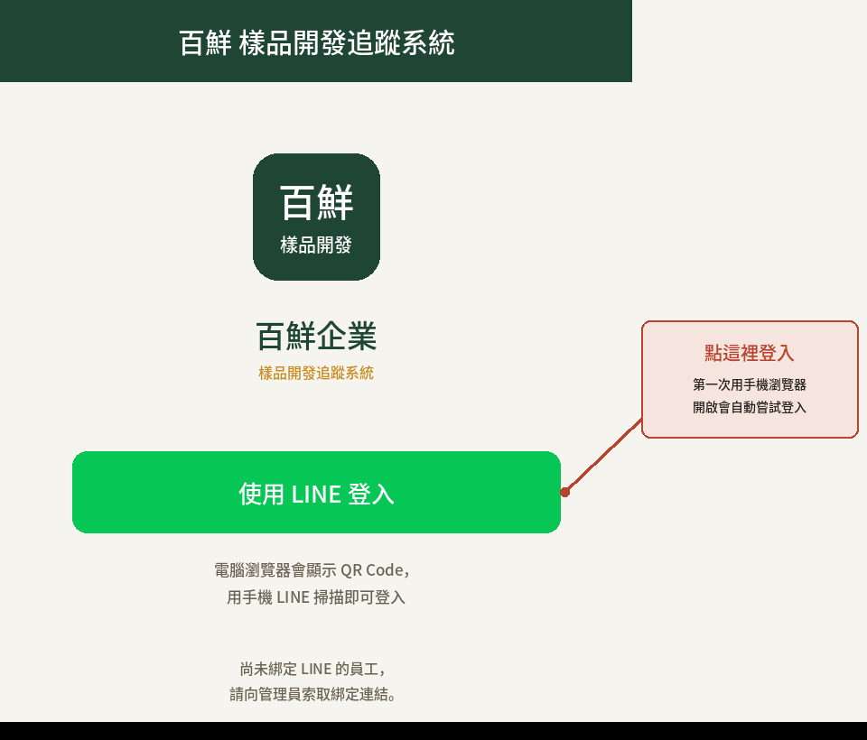

內部操作手冊
給業務、業務助理、研發、品管與管理者：從建立案件、打樣寄送、回饋定案到報價送審的完整操作。
📑 目錄
- 1 系統簡介與登入
- 1.1 如何登入
- 1.2 多重身分切換
- 1.3 系統連不上資料庫時
- 2 角色與權限總覽
- 2.1 各角色看得到的選單
- 3 案件與樣品的生命週期
- 3.1 狀態說明
- 3.2 每個階段的日期時間
- 4 業務／業務助理
- 4.1 客戶管理
- 4.2 建立案件
- 4.3 案件列表
- 4.4 單項樣品的暫停、結案與回饋
- 4.5 刪除與作廢案件
- 4.6 提醒中心
- 4.7 已寄出樣品查詢
- 5 研發／研發主管
- 5.1 作業流程一覽
- 5.2 品研工作台總覽
- 5.3 待分配與指派
- 5.4 處理樣品
- 5.5 研發分類與「沿用既有配方」
- 5.6 寄件作業（批次寄出）
- 5.7 展延申請
- 5.8 打樣歷程
- 5.9 看得到全部，只有負責人與代理人能編輯
- 6 文件處理與報價（品管／研發）
- 6.1 一個申請拆成各自的工作項目
- 6.2 文件處理頁籤與期限
- 6.3 報價索取：研發只提供原料成本
- 7 儀表板
- 7.1 打擊率怎麼算
- 7.2 客戶看到的儀表板
- 8 管理者／最高管理員
- 8.1 使用者管理與 LINE 綁定
- 8.2 時效設定
- 9 常見問題
- 10 更新紀錄
我是業務／業務助理
建立案件、追蹤進度、傳回饋小卡、作廢案件
我是研發／研發主管
樣品處理、寄件作業、展延、暫停與恢復
我是品管／品管主管
文件處理（COA／報價）與送驗、報價原料成本
我是管理者／最高管理員
使用者、時效設定、身分切換
1系統簡介與登入
百鮮企業樣品開發追蹤系統，用來管理客戶的樣品開發需求、文件索取（COA／報價）與案件全流程進度。從提出需求、研發打樣、寄出到客戶回饋定案，業務、研發、品管與管理者都在同一個地方掌握進度。
1.1如何登入
系統全面使用 LINE 登入，同仁不需要記帳號密碼。用手機或電腦瀏覽器開啟系統網址，畫面上只會看到「使用 LINE 登入」按鈕。

- 手機瀏覽器：點下去會直接用目前的 LINE 帳號登入，已登入過會自動略過。
- 電腦瀏覽器：會顯示 QR Code，用手機 LINE 掃描即可。
- 從 LINE App 內打開（例如點同事分享的連結）：建議點右上角選單，選「用瀏覽器開啟」，改用 Safari／Chrome 較穩定。
1.2多重身分切換
同一個帳號可以有多個角色（例如同時是業務與管理者）。有兩個以上身分時，側邊選單（手機版在頂部）會出現身分切換下拉選單：
- 切換後只以所選身分操作，其他身分的選單與功能暫時隱藏，頁面上方會出現橫幅提醒「目前僅以 ○○ 身分操作」。
- 選回預設，就恢復顯示全部角色的權限。
- 最高管理員另外多一個「客戶（預覽）」選項，可以看到客戶實際看到的畫面（儀表板提醒、案件列表、回饋功能）。不會讓你逐一以某位客戶身分登入，只是方便檢查客戶端的呈現。
1.3系統連不上資料庫時
系統的資料存放在 Google Sheet。若連線中斷，整個畫面會改成「系統目前無法連接到資料庫」並列出原因，期間不會讀寫任何資料，所以不會出現「看起來沒資料」或誤寫到暫存區的情況。
- 按畫面上的 重新嘗試連線，系統會立刻重試。
- 若仍失敗，等幾分鐘再按一次；多數是 Google 端短暫連線異常。
- 持續失敗請通知系統管理員，提供畫面上顯示的錯誤原因。
畫面上也會註明：這不是帳號或資料被清除，案件、樣品與 LINE 綁定資料都還在，只是暫時讀取不到。恢復連線後會正常顯示，不需要重新綁定。
2角色與權限總覽
系統依工作內容分成多種角色，每個人看到的選單和資料範圍不同；一個帳號可同時具備多個角色。
業務／業務助理
- 建立客戶、建立案件
- 客戶名單共用，但案件只看得到自己建立或自己負責的
- 傳送回饋小卡、代填回饋
- 審核研發的展延申請
研發／研發主管
- 品研工作台處理樣品、寄件作業
- 研發主管負責分配研發人員
- 研發備註、打樣歷程（僅內部可見）
- 申請工時展延、暫停／恢復單項需求
- 全部可檢視，只編輯自己負責或代理的（5.9）
品管／品管主管
- 文件處理：COA、報價等文件
- 標記已送驗
- 品管主管可指派文件負責人
- 與研發一樣看得到全部案件與文件，只編輯自己負責或代理的
管理者／最高管理員
- 使用者管理、時效設定
- 看得到全部資料，含研發備註
- 最高管理員可切換成客戶預覽
客戶（LINE 會員）
- 綁定 LINE 後查詢自己公司的案件
- 隨時對已寄出的樣品填寫回饋
- 儀表板有待回饋、待付款提醒
- 看不到研發備註與案件備註
2.1各角色看得到的選單
| 選單 | 最高管理員／管理者 | 業務助理／業務 | 研發主管／研發 | 品管主管／品管 | 客戶 |
|---|---|---|---|---|---|
| 儀表板 | ✔ | ✔ | ✔ | ✔ | ✔ |
| 客戶管理 | ✔ | ✔ | — | — | — |
| 案件 | ✔ | ✔ | ✔ | ✔ | ✔ |
| 品研工作台 | ✔ | ✔ | ✔ | ✔ | — |
| 提醒中心 | ✔ | ✔ | — | — | — |
| 時效設定 | ✔ | — | — | — | — |
| 使用者管理 | ✔ | — | — | — | — |
3案件與樣品的生命週期
一個「案件」可以包含多項「樣品需求」，每一項樣品需求各自走自己的流程。例如同一個案件有 3 個口味，其中一個客戶不做了，只會暫停那一項，其餘兩項照常進行。
3.1狀態說明
| 狀態 | 說明 |
|---|---|
| 待分配 | 案件剛建立，研發主管還沒指派研發人員。上班時間 4 小時內應完成分配，超過會出現「⚠ 逾期未分配」警示。 |
| 打樣中 | 已指派研發人員，正在實際製作樣品，時限開始計算。 |
| 已備妥 | 樣品做好、填了樣品編號，等待寄出。這一步完成後，接手的是寄件作業（可依客戶合併寄出）。 |
| 已寄出 | 樣品已寄給客戶，等待試用後回饋。 |
| 待回饋 | 業務已傳回饋小卡（或客戶自己從案件記錄進入），等客戶填寫。 |
| 需調整 | 客戶要求調整，研發重新打樣，開啟新一輪、時限重新起算（速別顯示為「第 N 次調整」）。 |
| 配方定案 | 客戶確認採用這個配方；列入打擊率、研發 KPI 與開發費退費追蹤。 |
| 常規出貨 | （客戶端顯示為「已完成」）非開發樣品（研發分類不是新品開發／設計變更）。研發寄出後自動結案為此狀態，不用等客戶回饋；不進定案配方，也不列入打擊率與 KPI。 |
| 已結案 | 這一項樣品需求被結案（客戶不要這項了）。同案件其他樣品照常進行；資料保留、可重新開啟，不再出現在研發工作清單。 |
| 暫停 | 這一項需求被暫停（客戶暫無需求、或人工暫停）。暫停的項目一律只顯示「暫停」，不會再顯示「打樣中」等進行中狀態，也不計逾時；可以恢復。 |
案件本身的狀態
進行中 還有樣品需求未完結。 已定案 所有需求都結束（定案、常規出貨，或部分被結案）時自動轉換。 案件暫停 整個案件暫停。 已結案 案件裡每一項樣品都被結案（客戶全部不要了）時自動轉換，不能手動設定（見 4.4）。 已作廢 案件被作廢，資料保留（見 4.5）。
3.2每個階段的日期時間
案件詳情裡每一項樣品上方有一條進度條。滑鼠移到某個階段上（電腦）或點一下該階段（手機），就會跳出該階段發生的日期與時間。在手機點一下會釘住顯示，再點一次關閉。
4業務／業務助理
4.1客戶管理
側邊選單「客戶管理」可新增、編輯、刪除客戶。客戶名單由所有業務共用，任何業務都能選用來建案；但案件本身只有自己建立或自己負責的才看得到（見 4.3）。
- 新增時系統會檢查客戶名稱是否重複（自動忽略前後空白），重複會擋下並告訴你已有的客戶編號。
- 客戶編號建議對應 NetSuite 編號；不知道可以留白，系統先給暫用編號（
TMP-開頭），之後再補。 - 刪除：只有「底下完全沒有案件」的客戶才能刪，且只能刪自己建立的（管理者不受此限）。
- 客戶列表會顯示「● 正式會員／未註冊」。客戶不需要另外申請：第一次點開你傳的回饋小卡時，會自動引導他註冊並綁定 LINE（見 客戶端手冊）。
4.2建立案件
「案件」頁面右上角按 ＋ 新增，面板會從右側滑出，不必離開列表。可切換樣品申請與文件申請。
樣品申請
- 選擇客戶（可輸入編號、名稱、聯絡人或電話搜尋，也能在下拉選單裡快速新增客戶）。
- 填案件速別（特急件／急件／普通件）、重要性、收費方式。
- 選「不收費」要填原因（例如策略合作、內部測試），沒填送不出去。
- 選寄送方式（整個案件統一一種）。
- 逐項填樣品需求：樣品名稱（必填）、說明、重量、份量、寄送地址（留空用客戶預設地址）。按 ＋ 加入需求項 可一次送出多筆。
- 確認開發費試算後送出。收費案件送出後，系統會問是否立即傳送「報價單開立申請」小卡給業務助理。
文件申請（COA／報價／其他）
可以附加在已存在的樣品需求上（例如定案後要出 COA），也可以「獨立索取」（不綁特定樣品，例如客戶只想要一份報價單）。勾選文件類型、填需求說明後送出。同時勾選多種類型，系統會自動拆成各自獨立的工作項目（見 6），送出後會提示拆成幾筆。
4.3案件列表
「案件」頁面有四個頁籤：全部、樣品申請、文件申請、已寄出樣品。
- 業務／業務助理只看得到自己建立、或自己是責任業務的案件。
- 點欄位標題可排序（第一次由大到小，再點反過來）；搜尋欄可用案件編號、客戶、責任業務、經手研發、建立者查找。
- 已定案的案件會自動沉到列表後面，已作廢的更後面，進行中的案件永遠在前面。
- 每列最左邊的星號可「釘選」置頂，這是個人設定，不影響同事。
- 已作廢案件預設隱藏，勾選列表上的「顯示已作廢案件」就會出現（見 4.5）。
- 列表下方可選每頁 10／20／50 筆。手機版的欄位會自動收合，案件／樣品名稱、地址、備註過長時會自動換行。
4.4單項樣品的暫停、結案與回饋
案件裡每一項樣品都能單獨處理，不會影響同案件的其他樣品。
| 情境 | 怎麼做 | 對打擊率的影響 |
|---|---|---|
| 客戶只取消其中一項（暫無需求） | 在該項點「回饋」或「提醒中心 → 回饋提醒」填寫，選 暫無需求，必須填取消／暫停原因。 | 若這項還沒開始處理（仍為待分配）→ 不列入；若已經有人處理過 → 仍算一次沒打中。 |
| 暫時停一下，之後可能繼續 | 在案件詳情的該項點 暫停此項；要繼續時點 恢復此項。暫停期間不計逾時。 | 依該項是否已開始處理，規則同上。 |
| 客戶不要這項了（不會再繼續） | 在案件詳情該項點 結案（或在代填回饋選 ⛔ 結案（客戶不要了）），必須填結案原因。之後想繼續可按 重新開啟。 | 若這項還沒開始處理（待分配）→ 不列入；已經處理過 → 仍算一次沒打中。 |
| 客戶要的是常規品／單方原料 | 由研發在處理需求時把「研發分類」選成非開發分類（見 5.5），寄出後系統自動結案為常規出貨；業務也仍可代填 📦 常規品／原料出貨。 | 不列入打擊率。 |
已暫停的項目，在列表與研發工作台只顯示「暫停」，且會排在最後面。
結案後會發生什麼
- 只影響這一項；同案件其他樣品完全不受影響。
- 客戶端：這項顯示「已結案」，不再有「填寫回饋」按鈕。
- 案件狀態自動判斷：所有樣品都被結案 → 案件轉為 已結案；樣品都結束但有定案或常規出貨 → 已定案；還有樣品在進行 → 維持進行中。重新開啟任何一項，案件就回到進行中。
- 誰可以結案／重新開啟：業務、業務助理（本人案件）、研發、研發主管、管理者、最高管理員。已定案或常規出貨的樣品不需要結案。
4.5刪除與作廢案件
案件詳情右上角的按鈕會依狀態自動變化：
| 案件狀況 | 按鈕 | 結果 |
|---|---|---|
| 所有樣品都還在「待分配」（研發完全沒開始） | 刪除 | 直接刪除，不留紀錄。 |
| 已有任何一項被處理過 | 作廢 | 必須填寫作廢原因，案件標記為「已作廢」，資料保留可查，不會真的消失。 |
- 可刪除／作廢的人：案件建立者與最高管理員。有處理進度的案件，任何人（含最高管理員）都不能直接永久刪除，只能作廢。
- 作廢後案件預設從列表隱藏；勾選「顯示已作廢案件」可以重新看到，詳情頁會顯示作廢原因。
- 已開始處理過的樣品，作廢後仍會計入打擊率（算一次沒打中）；尚在待分配的項目則不計。
- 如果客戶只是不要其中一項，請用 4.4 的單項結案，不要整案作廢。
4.6提醒中心
選單上的數字就是你有幾件事待處理。頁籤如下：
| 頁籤 | 說明 |
|---|---|
| 回饋提醒 | 樣品寄出後第 3 天起（送達當天算第 1 天），可傳送「回饋確認小卡」給客戶；也可在這裡代填回饋（例如客戶電話口頭回覆）。 |
| 開發費退費提醒 | 配方定案後，客戶超過約定期限沒下正式訂單，提醒退還開發費。 |
| 績效指標提醒 | 配方定案後一年內的訂單可列入研發 KPI；接近到期提醒把握時間追單。 |
| 展延審核 | 研發申請的工時展延，由責任業務或案件建立人核准／駁回。 |
傳送回饋小卡
- 在 LINE App 內開啟系統：會跳出好友選擇器，選客戶的聊天室，小卡以你個人的 LINE 送出。
- 在電腦瀏覽器：按「複製回饋連結」，貼進與客戶的 LINE 對話，效果相同。
- 兩種方式都會寫入通知記錄，並把樣品轉為「待回饋」。
客戶要的是廠內常規品或原料時，請選「常規品／原料出貨」，不要選「配方定案」，否則會誤列入 KPI。（研發若已把分類選成非開發，樣品寄出後會自動結案，不需要代填。）
4.7已寄出樣品查詢
「案件」頁面的「已寄出樣品」頁籤，列出你名下所有已寄出、正在等客戶回饋的樣品，不必逐案點開。
5研發／研發主管
5.1作業流程一覽
「打樣中」與「已備妥」的差別：打樣中＝還在做；已備妥＝樣品做好、已有樣品編號，只差寄出。已備妥的樣品會出現在「寄件作業」頁籤，統一處理寄送。
5.2品研工作台總覽
側邊選單「品研工作台」是研發、品管的主要畫面，上方頁籤：
| 頁籤 | 用途 |
|---|---|
| 樣品處理 | 所有還需要研發動作的樣品需求。子頁籤：全部／待分配／打樣中／已備妥／需調整／暫停。 |
| 寄件作業 | 已備妥、等待寄出的樣品，依客戶分組，可批次寄出。 |
| 文件處理 | COA、報價等文件的處理（見 6）。 |
| 定案配方列表 | 已配方定案的配方清單。頁籤顯示總筆數，可選每頁 10／20／50 筆。 |
| 已寄出樣品 | 已寄出、等客戶回饋的樣品，頁籤顯示筆數，可選每頁 10／20／50 筆。已寄出的不會出現在「樣品處理」，要看請切到這裡。 |
- 列表每一列是一項樣品需求，不是整個案件。點「打樣中」或「已備妥」的那一列，會直接開啟該樣品的處理畫面，不用先進整個案件；其他狀態才會開啟案件詳情。
- 「全部」頁籤的排序：進行中的在前，配方定案往後移，常規出貨（紫色）再後面，暫停放最後。
- 暫停的樣品只出現在「暫停」頁籤，不會重複出現在「打樣中」等頁籤。
- 點欄位標題排序、搜尋欄查找、星號釘選，用法與案件列表相同。
5.3待分配與指派
新案件建立後，樣品名稱旁會有紅色 NEW。研發主管需在上班時間（週一至週五 08:00–12:00、13:00–17:00，扣除國定假日）4 小時內完成指派，逾時轉為「⚠ 逾期未分配」。點 指派 選研發人員，狀態自動轉為「打樣中」並開始計時。
一般研發人員也看得到待分配與其他人負責的項目（方便參考），但只有被指派的負責人、代理人或主管能編輯，詳見 5.9。
5.4處理樣品
開啟處理表單後，最上方會集中這次需要的資訊：
- 寄送資訊：直接顯示收件人、電話、地址，旁邊有 複製收件資訊。
- 樣品貼紙內容：自動組好「客戶／樣品／數量／給樣日期／有效期限（自動抓一年後）／公司名稱／電話」，可直接編輯，再按 複製貼紙內容 貼到貼紙軟體。
- 填樣品編號與日期（自動產生樣品編號、轉「已備妥」）。
- 研發備註：僅研發相關角色與管理者看得到，業務、客戶看不到。
5.5研發分類與「沿用既有配方」
在「處理需求」表單的研發分類由研發決定樣品是不是「開發配方」。這個選擇會直接影響定案配方列表與打擊率，寄出前一定要選好：沒選分類的樣品系統不允許寄出（寄件作業裡會顯示紅色「未分類」且不能勾選）。分類只由研發設定，業務不需要操作。
| 分類 | 性質 | 寄出後會怎樣 |
|---|---|---|
| 新品開發、設計變更 | 開發配方 | 等客戶回饋；客戶確認定案 → 進「定案配方列表」，計入打擊率、研發 KPI、開發費退費追蹤。 |
| 單方原料、既有常規品、原料成品、純代工、其他、新案通過 | 非開發 | 自動結案為「常規出貨」。不等客戶回饋，不進定案配方，不計打擊率。 |
| 沿用既有配方 | 非開發（沿用） | 同上，並且要指定「沿用哪一筆定案配方」。 |
| （沒選） | 未分類 | 不能寄出，請先選擇分類。 |
什麼時候選「沿用既有配方」
客戶要的配方，其實是公司之前已經為另一個客戶開發並定案的（例如原本只給 A 客戶，後來送樣給 B 客戶）。這時請在 B 客戶的樣品需求上：
- 開啟「品研工作台 → 樣品處理」，點該樣品的 處理需求（案件詳情裡的處理表單也一樣）。
- 研發分類選 沿用既有配方，下方會出現「沿用哪一筆定案配方」，選出來源配方（顯示編號、樣品名稱、原客戶、定案日）。沒選來源不能儲存。
- 照常填樣品編號、寄出。寄出後系統自動結案為「常規出貨」：不產生新的定案、不會把同一個配方重複算進打擊率。
5.6寄件作業（批次寄出）
「寄件作業」頁籤把已備妥的樣品依客戶自動分組。同一客戶若有 3 項、只有 2 項先好，可以只勾那 2 項先寄，收件資訊與追蹤編號共用，一次填寫即可，不必每個樣品重填。
- 展開客戶，勾選要一起寄的樣品（項目 3 項以內預設展開）。
- 可按 複製收件資訊、複製貼紙內容（依勾選項目自動組多張）。
- 填追蹤編號、寄出日期，按 標記為已寄出，勾選的項目一次轉為「已寄出」。
5.7展延申請
樣品製作超過原本時限（例如原料延遲到貨）時，在案件詳情點 展延，填需要延長的時數與原因。送出後由責任業務或案件建立人審核；核准後時限自動延長，審核期間不計逾時。
傳送審核小卡，對方直接點選確認
送出展延後，畫面會詢問是否傳送「展延審核」小卡，選好聊天室（責任業務或主管）傳出去。對方在 LINE 點小卡上的「查看並審核」，就能直接核准或駁回（自動以綁定的 LINE 身分登入），不必另外開系統找案件。只有該案的責任業務、建立人或管理者看得到審核按鈕；審核後申請狀態與時限立即更新。
5.8打樣歷程
樣品經過多輪調整時，案件詳情會有「打樣歷程」展開按鈕，列出每一輪的研發備註與回饋結果，換新一輪不會蓋掉前面的內容。這個功能只有研發、品管與管理者看得到。
5.9看得到全部，只有負責人與代理人能編輯
研發、品管人員可以檢視全部的案件、樣品需求與文件需求（包含別人負責的、還沒分配的），需要參考前面別人做過的案子時可以直接查看。但只能編輯自己負責的項目，其他人的項目是唯讀，列表上會標示 唯讀。
| 身分 | 看得到 | 可以編輯 |
|---|---|---|
| 負責人（經手研發／文件負責人） | 全部 | 自己負責的項目 |
| 代理人 | 全部 | 被設為代理的項目（標示 代理） |
| 其他研發／品管 | 全部 | 不可編輯，只能檢視 |
| 研發主管、品管主管、管理者 | 全部 | 全部（原本的權限不變） |
預設只看自己的，一鍵切換全部
品研工作台的「樣品處理」與「文件處理」上方有 只看我負責／代理的 勾選框。研發、品管人員預設勾選，畫面只列出自己的待辦；取消勾選就能看到全部。頁籤上的數字也是自己負責或代理的件數。選擇會記在這台裝置上。「寄件作業」只列出你能處理的樣品。
設定代理人（讓同事協助）
- 負責人在樣品列表按該列的 👥（案件詳情的樣品卡上是 👥 代理人），或在文件詳情按 設定代理人。
- 勾選要協助的研發／品管同仁，按 儲存。可以選多位；取消勾選就是取消代理。
- 代理人就能代為處理、寄出、申請展延、暫停、結案；文件則可填規格、標記送驗、改狀態。
6文件處理與報價（品管／研發）
品管、品管主管的權限與研發相近，主要差異是「品研工作台 → 文件處理」：COA、報價等文件的處理，通常由品管（及被指派的研發）負責。
6.1一個申請拆成各自的工作項目
文件申請若同時勾選 COA、報價、其他，系統會拆成各自獨立的文件申請，各有自己的編號、負責人、期限與進度。例如 COA 先做完就可以先結案，不必等報價。
6.2文件處理頁籤與期限
列表的「工時」欄顯示「已耗工時／時限」（例如 36/72h），超過時限顯示逾時；詳情頁也有同樣的工時說明。
文件列表有「更新」欄，顯示該文件最後一次異動的日期與時間（建立、指派負責人、修改內容、標記送驗、提供都會更新）。
「文件處理」可依進度分頁：全部／待分配／準備中／已送驗／已完成。「全部」的排序為：待分配置頂 → 準備中／已送驗 → 已完成放最後。
| 文件類型 | 預設處理期限 | 說明 |
|---|---|---|
| COA | 72 工時（3 個工作天） | 自申請建立日起算，只計入工作日（扣除週六日與國定假日），和樣品需求的「工時」一樣。 |
| 報價 | 120 工時（5 個工作天） | 同上。 |
| 其他 | 72 工時（3 個工作天） | 其他資料索取。 |
| 已送驗 | 168 工時（7 個工作天） | 勾選 🧪 標記已送驗 後，改成「送驗起算 168 工時」，取代原期限。 |
以上天數可由管理者在「時效設定」調整（見 8.2）。處理步驟：主管按 指派 選出負責人，負責人再按 填編號／規格（產規書編號、報價單編號、各規格的重量與報價），完成後按 標記已完成（已提供）。
6.3報價索取：研發只提供原料成本
報價類的文件索取，研發的作業只有提供原料成本。研發在「填編號／規格」填好各規格的原料成本並儲存，研發這一段就結束，進度顯示為「已完成」，不會一直卡在未完成清單。報價、MOQ、報價單編號只是報價記錄，業務與研發都可以填，不再影響研發進度，也不需要送審或核准。
7儀表板
最上方是篩選列：統計區間起／迄（打擊率與平均準備時數依「寄出日」；案件數、已寄出比例、客戶結案依「申請日期」）、個別業務（打擊率）（管理者、業務助理可選）、個別研發（KPI）（管理者、研發主管可選）。
| 區塊 | 內容 |
|---|---|
| 案件概況 | 進行中案件、已定案案件、急件／特急件未結（排除常規出貨、暫停、已結案）、案件總數。只計樣品申請的案件，文件索取（COA／報價）不在內。 |
| 打擊率 | 區間內寄出的開發樣品：配方定案數、開發數、打擊率、待結果（見 7.1）。選「個別研發」就是該研發自己的打擊率。 |
| 案件數統計 | 區間內（依申請日期）全部／收費／不收費案件數。 |
| 已寄出樣品統計 | 區間內申請的開發樣品：需求數、已寄出數、已寄出比例（排除常規出貨與暫停；被客戶結案但已寄出的仍算已寄出）。 |
| 客戶結案 | 區間內申請的樣品需求中，被客戶結案（不要了）的項數與比例。結案原因不在儀表板顯示，請到案件詳情查看。 |
| 趨勢圖 | 可切換日／週／月：案件數與樣品需求數、寄出數與定案數、打擊率、平均準備時數。選了個別業務／研發，圖也會跟著篩選。 |
| 研發 KPI | 平均準備時數（區間內寄出，另顯示排除展延的版本）、本月 vs 上月平均準備時數（看有沒有加快）、已完成樣品數、逾時項數與累計逾時時數、展延待審（只算你看得到的）。 |
| 需求狀態分布 | 各狀態目前各有幾項。 |
| 滑鼠滑過看公式 | 每個指標（數字方塊與趨勢圖上的點）只要滑鼠移上去（手機點一下），就會跳出該指標的計算公式與目前的實際數字，例如「打擊率＝定案 12 ÷ 開發數 40 ＝ 30%」。 |
7.1打擊率怎麼算
打擊率 ＝ 配方定案數 ÷ 開發數。其中開發數是區間內寄出的開發樣品項數。以寄出日歸屬區間：樣品在哪個月寄出，就算那個月的，方便公平地看研發每個月的成績，也可搭配「個別研發」看個人。
✔ 列入開發數
- 研發分類為新品開發、設計變更且已寄出的樣品
- 不論客戶已定案、已結案或還在等結果，都算一項
🎯 打中
- 配方定案的項數＝分子
- 開發數＝定案數＋客戶結案數＋待結果數
- 「待結果」（已寄出、待回饋、需調整、暫停）另外顯示，方便看有多少還沒有答案
✘ 不列入
- 非開發分類（單方原料、既有常規品、沿用既有配方…），即 常規出貨
- 還沒寄出的樣品
- 已作廢案件
平均準備時數：看有沒有進步
平均準備時數可依區間查看，另有「本月 vs 上月」比較（例如上月 52 h，本月 43 h，顯示「加快 17%」），也可看趨勢圖確認是否持續變快。
7.2客戶看到的儀表板
客戶登入網頁後，儀表板最上方會有兩種提醒：
- 📝 待您回饋的樣品：已寄出／待回饋／需調整的樣品，每項有「填寫回饋」按鈕。
- 💳 待付款開發費：收費案件且尚未登錄匯款日期者，顯示含稅金額。
最高管理員可以用「客戶（預覽）」確認這個畫面（見 1.2）。
8管理者／最高管理員
8.1使用者管理與 LINE 綁定
- 新增、停用帳號，設定角色（可同時勾選多個角色）。
- 「LINE 綁定」欄會顯示 已綁定／待綁定／未綁定。
- 新同仁建好帳號後，按該列的 綁定連結（一次性），傳給本人；他用自己的 LINE 開啟，輸入工號與生日（MMDD）即完成綁定，之後就能用 LINE 登入。
- 一次要綁很多人：按 📋 通用綁定連結，可直接貼到群組，任何未綁定同仁用自己的 LINE 開啟、輸入自己的工號與生日即可，此連結可重複使用。
- 某人顯示「已綁定」卻無法登入（例如換了 LINE 帳號），先 解除綁定，再重新提供連結讓對方重綁。
8.2時效設定
側邊選單「時效設定」包含三個區塊：
| 區塊 | 預設 | 說明 |
|---|---|---|
| 案件速別時限 | 特急件 1、急件 3、普通件 5、調整件 5（工作日） | 決定樣品需求的逾時判斷。 |
| 文件類型時限 | COA 3、報價 5、其他 3（工作日） | 各類文件的處理期限，換算成工時（×24h）顯示，扣除週六日與國定假日，列表顯示「已耗／時限 h」。 |
| 國定假日 | — | 會影響所有逾時、展延與 4 小時分配時限的計算。建議每年初更新下一年度。 |
9常見問題
登入頁一直顯示「LINE 登入暫時無法使用」？
整個畫面顯示「系統目前無法連接到資料庫」？
我是這個客戶的責任業務，為什麼看不到某筆案件？
為什麼看不到「作廢」的案件？
為什麼案件沒有「刪除」，只有「作廢」？
客戶不要某個樣品（或整案都不要），怎麼辦？
「暫停」和「結案」有什麼不同？
暫停的樣品為什麼不在「打樣中」頁籤？
研發備註、打樣歷程為什麼客戶與業務看不到？
客戶回饋選錯了怎麼辦？
報價索取，研發要做到什麼程度才算完成？
10更新紀錄
v78 研發／品管全部可檢視、負責人與代理人才能編輯
v77 打擊率分母、指標公式提示
v76 儀表板指標重整、展延審核小卡
v75 研發分類、沿用既有配方、文件工時
v74 文件索取調整
v73 單項樣品「結案」
v70／v71 系統斷線保護
v69 文件申請拆分
v56–v68 流程與介面強化
- 報價送審流程（未送審／待核准／已核准／已駁回）與管理者「報價待核准」提醒
- 客戶可隨時查看自己全部案件與樣品，並對各別樣品填寫回饋；客戶儀表板新增待回饋、待付款提醒
- 多重身分切換；最高管理員可預覽客戶畫面
- 案件「作廢」（取代刪除）、作廢原因、顯示／隱藏切換；單項「暫無需求」只影響該樣品
- 打擊率規則調整（有處理過的需求一律列入）；已定案案件自動沉到列表後面
- 品研工作台：直接處理單項樣品、寄件作業批次寄出、暫停獨立頁籤、常規出貨改紫色
- 頁籤改名：案件申請→樣品處理、文件申請→文件處理、定案配方明細表→定案配方列表
- 文件處理狀態分頁與排序；各文件類型獨立時限（時效設定）
- 手機版面：需求項目欄位重排、長文字自動換行